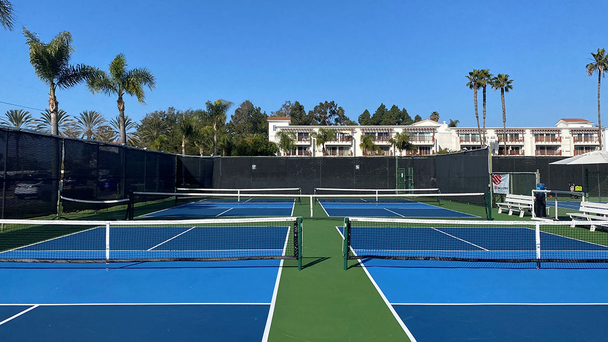

Amelia Island, FL
Omni Amelia Island Resort
- Family-friendly resort with programs
- Atlantic Ocean beachfront
Welcome to Naples, Florida - officially recognized as the Pickleball Capital of the World. This Gulf Coast paradise has earned its title through an unmatched combination of pristine courts, year-round perfect weather, and a vibrant community that lives and breathes the sport. Whether you're a tournament player seeking competitive action or a recreational enthusiast looking for your next vacation destination, Naples delivers the ultimate pickleball experience.
With over 64 dedicated courts spread across the city and surrounding communities, plus world-class resorts, championship-level facilities, and stunning beaches just minutes away, Naples represents the pinnacle of pickleball vacation destinations. The city hosts major tournaments throughout the year, drawing professional players and enthusiasts from around the globe.
Naples has transformed into America's premier pickleball destination, and the numbers tell the story. The city and surrounding Collier County boast more than 64 courts at public parks, private clubs, and resort facilities. This isn't just about quantity - these are championship-caliber courts maintained to the highest standards.
The crown jewel of the Naples pickleball scene is East Naples Community Park, featuring 24 dedicated outdoor courts and hosting numerous national-level tournaments. Veterans Community Park offers another 12 courts with excellent amenities and a welcoming community atmosphere. For resort-level luxury, destinations like Naples Grande Beach Resort and Tiburon Golf Club provide members and guests with pristine facilities alongside five-star accommodations.
What truly sets Naples apart is the community. You'll find players of all skill levels, from beginners taking their first lessons to professional athletes training for major competitions. The social scene is vibrant, with regular organized play, round-robins, and social events that make it easy to connect with fellow enthusiasts.
The Official Pickleball Capital: Naples didn't just claim this title - it earned it through investment, community support, and dedication to the sport. The city has continuously expanded facilities and hosts some of the sport's most prestigious events.
Year-Round Perfect Weather: While much of the country deals with snow and cold, Naples offers sunshine and 70-80°F temperatures throughout fall, winter, and spring. Even summer months, though warmer, feature morning and evening play windows with spectacular Gulf Coast sunsets.
Beyond the Courts: After your morning match, you're minutes from world-class beaches, championship golf courses, fine dining on Fifth Avenue South, and cultural attractions like the Naples Philharmonic and Baker Museum. This is a complete vacation destination where pickleball enhances rather than defines your entire trip.
Tournament Central: From the US Open Pickleball Championships (held nearby in East Naples) to regional events throughout the season, Naples serves as a hub for competitive play. Even if you're not competing, watching top-level matches provides entertainment and learning opportunities.
Peak Season (November - April): Perfect weather with temperatures in the 70s-80s and low humidity. This is prime pickleball season with maximum tournament activity. Book accommodations well in advance as this is also peak tourist season for beaches and outdoor activities.
Shoulder Season (October & May): Excellent value with fewer crowds, still-great weather, and more available court time at public facilities. Many regular visitors prefer these months for the relaxed atmosphere.
Summer (June - September): Hot and humid, but the lowest prices of the year. Early morning and evening play is still enjoyable, and many facilities offer indoor air-conditioned courts. Great for budget-conscious travelers who don't mind the heat.
Southwest Florida International Airport (RSW) in Fort Myers is the primary gateway, located about 45 minutes north of Naples. Major airlines offer direct flights from most U.S. cities. Alternatively, Miami International Airport is a 2-hour drive with more flight options. A rental car is recommended for exploring Naples and accessing various court locations, though some resorts offer shuttle services.
Balance your pickleball schedule with Naples' other attractions: pristine Gulf beaches perfect for swimming and shelling, world-class golf at dozens of championship courses, shopping and dining in historic downtown and on Fifth Avenue South, nature experiences at the Naples Botanical Garden and Corkscrew Swamp Sanctuary, and sunset cruises on Naples Bay.